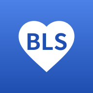

Simple BLS
医師監修
Simple BLSは、一次救命処置（BLS/CPR）をその場で支援するスマートフォンアプリです。 胸骨圧迫のリズム音・音声案内・ワンタップでの119番通報など、救命の現場で必要な機能を 無料で提供しています。
運営について
- 広告なしで運営しています。
- 個人の医師が開発・医学監修しています。
- アプリ内でのご支援（寄付）は開発・維持のための任意のものです。寄付に対する商品・機能の提供（対価）はありません。
ご意見・お問い合わせ
アプリ内の「ご意見・改善案を送る」ボタン、またはこちらの フォームからお寄せください。